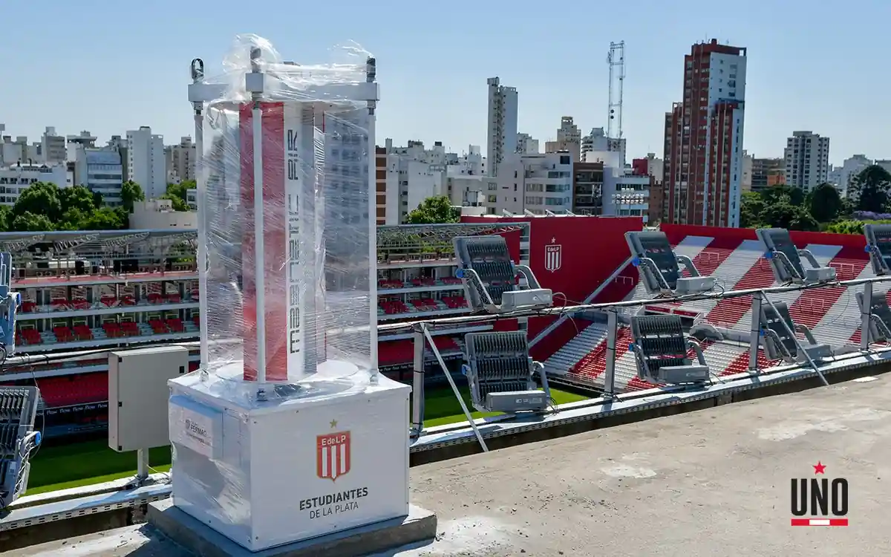
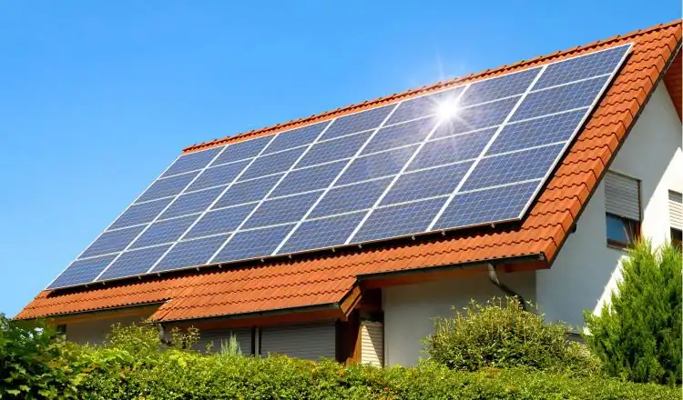
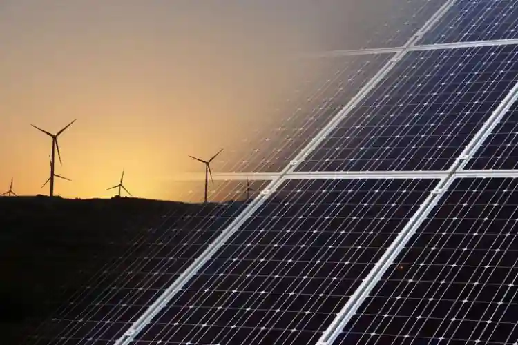

Fermag es una empresa comprometida con el desarrollo sostenible y la utilización de energías renovables para impulsar un futuro más limpio y resiliente. Nos especializamos en la implementación de sistemas de energía eólica y solar, junto con soluciones de respaldo de energía UPS (Uninterruptible Power Supply). En Fermag, creemos en el poder de las energías renovables para reducir nuestra dependencia de los combustibles fósiles y mitigar el cambio climático, mientras brindamos soluciones energéticas confiables y seguras.
La energía eólica y solar son dos formas de energía renovable ampliamente utilizadas en todo el mundo. La energía eólica se genera mediante la captura y transformación de la energía cinética del viento en electricidad, mientras que la energía solar se obtiene a partir de la radiación solar mediante paneles fotovoltaicos. En Fermag, nos especializamos en la implementación de sistemas de energía eólica y solar adaptados a las necesidades de nuestros clientes. Estas fuentes renovables de energía nos permiten reducir las emisiones de gases de efecto invernadero y aprovechar los recursos naturales de manera sostenible.
 En Fermag, aprovechamos las energías renovables eólica y solar para proporcionar soluciones energéticas limpias y confiables a nuestros clientes. Nuestros sistemas de energía eólica y solar se diseñan y se implementan de manera eficiente, asegurando un suministro continuo y sostenible de electricidad. Además, combinamos estas fuentes de energía con soluciones de respaldo de energía UPS para garantizar un suministro ininterrumpido en caso de cortes de energía. Esto es especialmente importante para empresas y organizaciones que necesitan una fuente de energía confiable en todo momento. En Fermag, nos enorgullece proporcionar soluciones integrales de energías renovables y UPS que reducen la huella de carbono, promueven la independencia energética y garantizan la continuidad de las operaciones.
En Fermag, estamos comprometidos en impulsar el uso de energías renovables eólica y solar, junto con soluciones de respaldo de energía UPS. Nuestro enfoque se basa en la sostenibilidad, la confiabilidad y la adaptación a las necesidades de cada cliente. Descubre cómo nuestras soluciones en energías renovables y UPS pueden transformar tu enfoque energético hacia uno más limpio y eficiente con Fermag. Juntos, podemos construir un futuro donde las fuentes de energía renovable sean la base de nuestra infraestructura energética y aseguren un suministro confiable y sostenible.